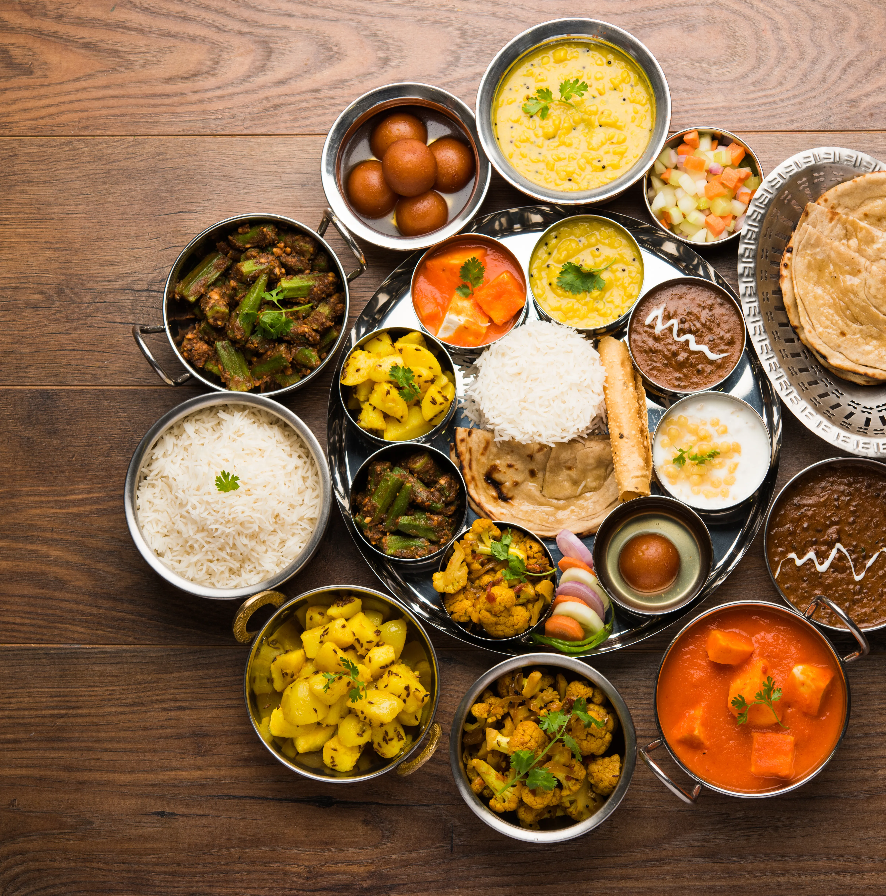
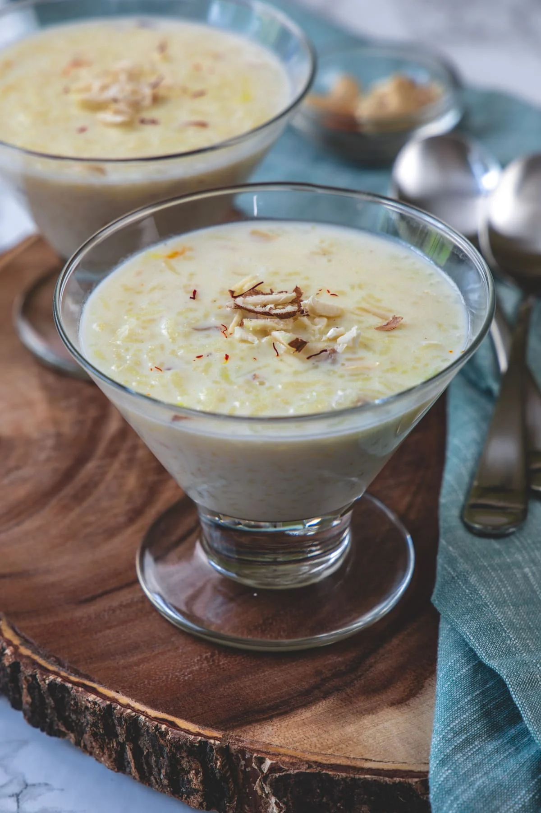

Indian Recipes: 3 Course Meal
This collection of classic, delicious Indian recipes will help you plan the perfect 3 course meal for your family and friends

- Appetizer:
Samosas
Samosas Recipe

- Main Course:
Butter Chicken
Butter Chicken Recipe

- Dessert:
Kheer
Kheer Recipe

Want to submit your own recipe?
Click Here!